Antes da minha entrada na empresa, já existia um estudo de design para uma nova plataforma de cursos: fluxos e telas pensados, mas nunca implementados. Até então, os alunos estudavam por uma plataforma terceirizada, sem nenhuma solução própria no ar.
Entrei como UX/UI Designer, na minha primeira posição na função e em regime CLT, para dar continuidade a esse estudo junto com a equipe de desenvolvimento. O objetivo era claro: migrar a base de alunos para uma plataforma própria, construída a partir daquele material herdado.
O desafio não era desenhar do zero. Era transformar protótipo em produto real, o que trazia três frentes de risco:
Atuei sob orientação direta do Product Owner, contribuindo com sugestões de usabilidade e ideias de fluxo. Participei dos testes internos, dos ciclos de feedback e ajustes, até a aprovação da diretoria, e continuei acompanhando o produto depois que ele foi ao ar.
"Aprendi a função fazendo parte dela, dentro de um produto que de fato foi ao ar."
Paralelamente, eu cursava UX Unicórnio. Cada conceito novo que aprendia em sala virava prática quase no mesmo dia, numa curva de aprendizado bem diferente da de quem só estuda em projetos de estudo.
A linha do tempo do projeto, da herança do estudo ao monitoramento pós-lançamento:
O fluxo de entrada do aluno na nova plataforma, do cadastro à conta ativa:
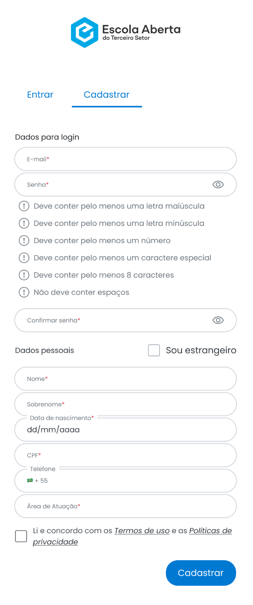
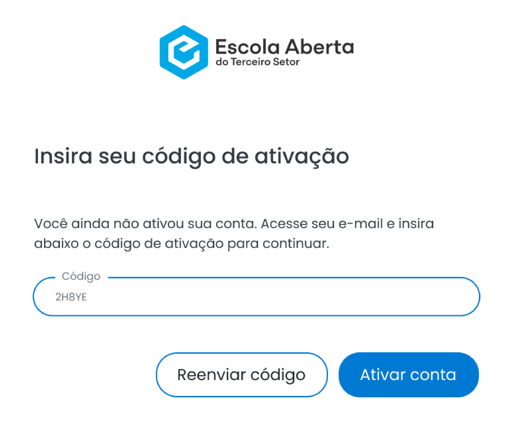
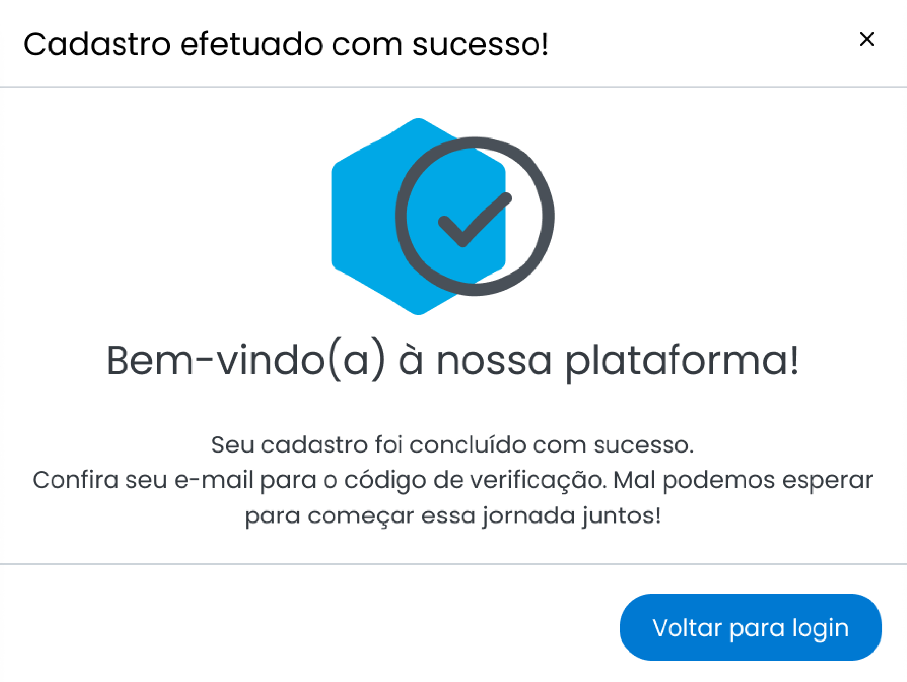
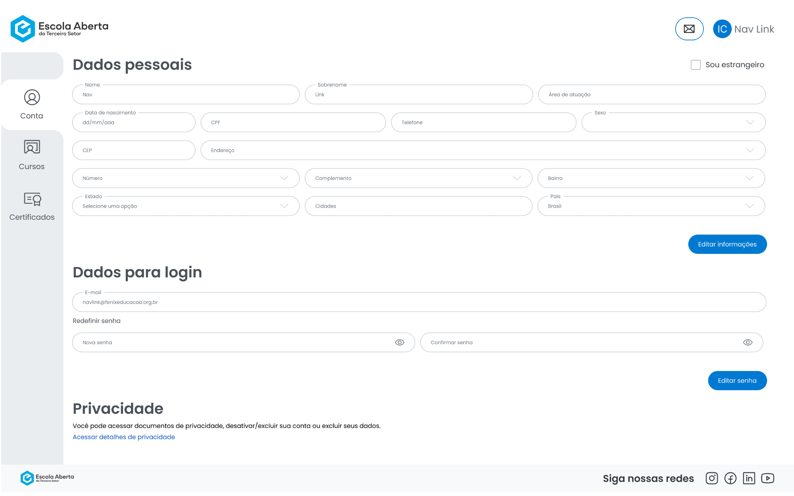
Antes da migração, os alunos acessavam os cursos por uma plataforma terceirizada. Migrar de plataforma é, por natureza, um momento de atrito: o aluno precisa entender onde estão seus cursos, como acessar, e por que tudo mudou.
Para reduzir esse atrito, criei um vídeo tutorial passo a passo, orientando os alunos sobre como recuperar o acesso e migrar da plataforma antiga para a nova. Propus à equipe de dev a inclusão de um botão de destaque "Recuperar acesso" na própria tela de login, dando acesso direto a esse vídeo no momento em que o aluno mais precisaria dessa orientação, antes de qualquer dúvida ou abandono.
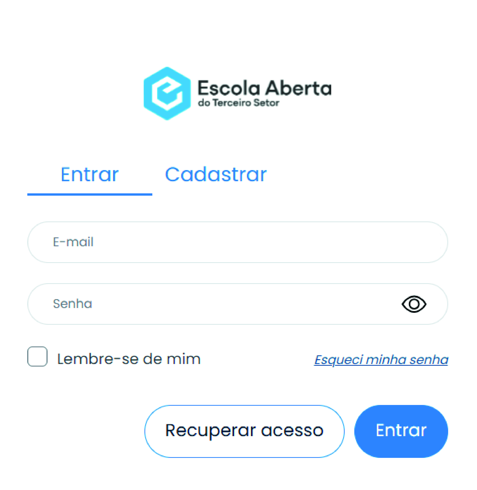
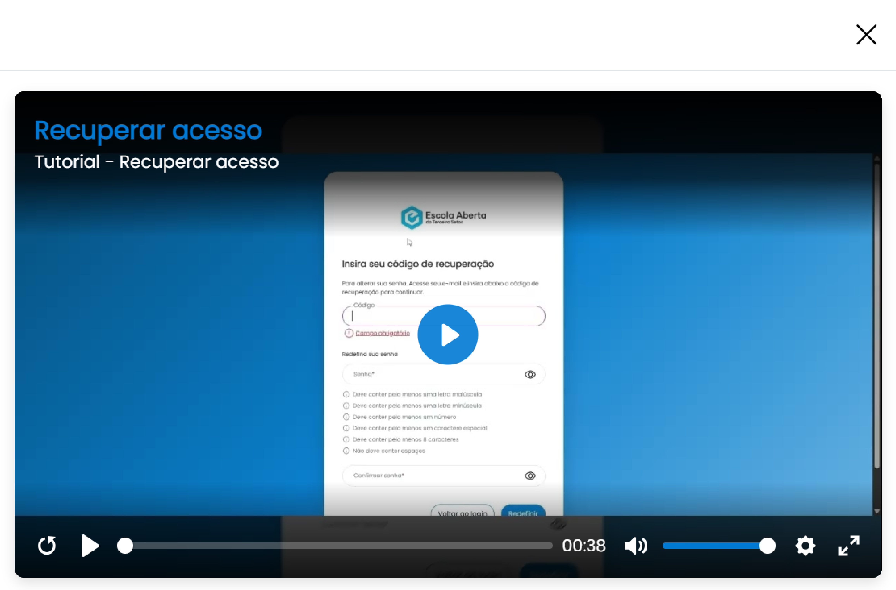
Dentro de cada curso, os módulos podiam reunir diferentes formatos de conteúdo — videoaulas, links externos, avaliações e anexos —, sempre com indicação clara do progresso do aluno:
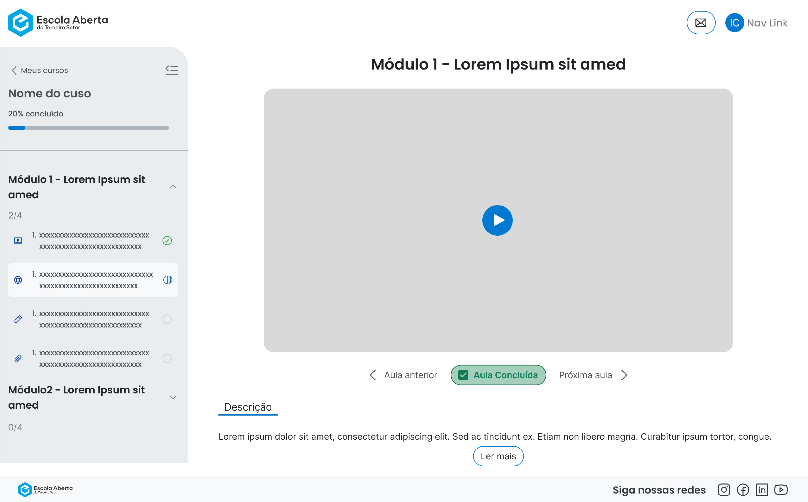
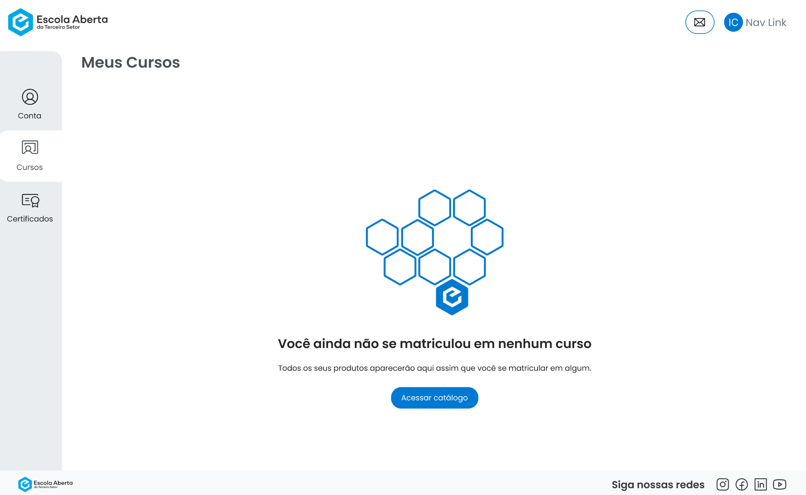
O projeto foi aprovado pela diretoria e lançado com sucesso, com acompanhamento contínuo nas primeiras semanas:
Além desses pontos, o resultado mais relevante foi de processo: o ciclo entre design, dados e desenvolvimento se fechou de verdade, com problemas que não apareceram nos testes internos capturados e corrigidos com dados reais de uso, não com suposições. Hoje, inclusive, o backend da plataforma é open source (licença GPL-2.0), disponível publicamente no GitHub.
A jornada do aluno após a migração, do primeiro curso à conclusão com certificado:
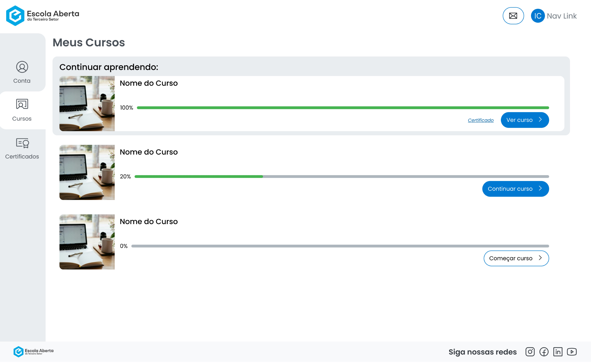
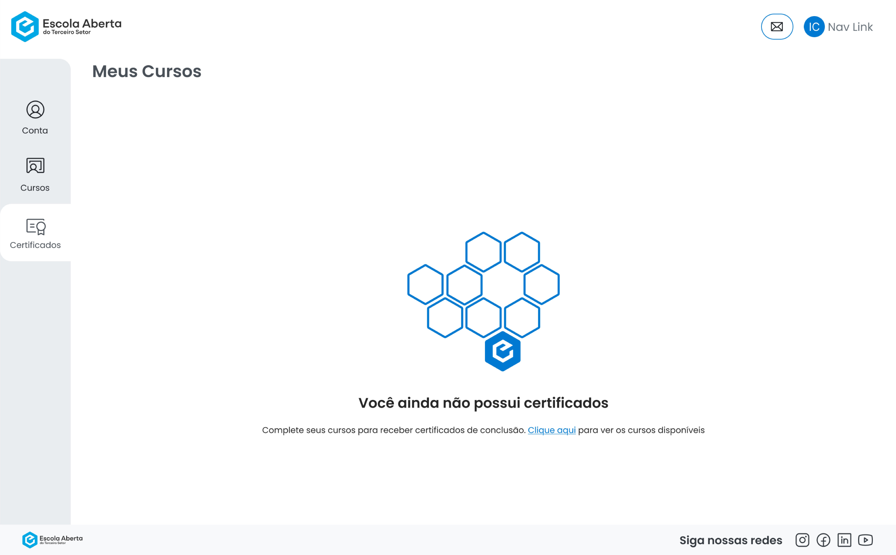
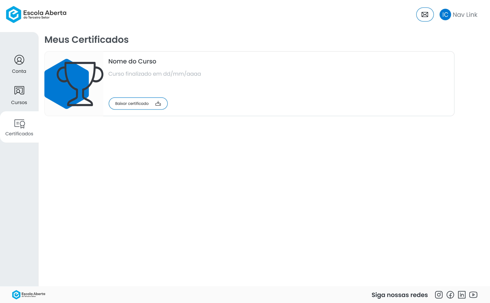
Esse foi meu primeiro contato real com a função e com o Figma dentro de um produto que de fato foi ao ar. Três aprendizados centrais:
Microsoft Clarity.O link leva à tela de login real da plataforma. O acesso ao conteúdo interno requer cadastro de aluno.